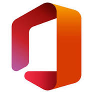

Microsoft Office 2013 (codenamed Office 15[6]) is a version of Microsoft Office, a productivity suite for Microsoft Windows. It is the successor to Microsoft Office 2010 and the predecessor to Microsoft Office 2016. Unlike with Office 2010, no OS X equivalent was released.
Microsoft Office 2013 includes extended file format support, user interface updates and support for touch among its new features and is suitable for IA-32 and x64 systems.[7]
Office 2013 is incompatible with Windows XP, Windows Server 2003, Windows Vista, Windows Server 2008, and earlier versions of Windows.[8] Office 2013 is compatible with Windows 7, Windows Server 2008 R2, Windows 8, Windows Server 2012, Windows 8.1, Windows Server 2012 R2, Windows 10, Windows Server 2016, and Windows Server 2019.[9][10][11][8] A version of Office 2013 comes included on Windows RT devices.[12] It is not supported on Windows 11 or Windows Server 2022.[3] It is the last version of Microsoft Office to support Windows 7 below SP1 and Windows Server 2008 R2 below SP1, as the following version, Microsoft Office 2016 will only support Windows 7 SP1 or later and Windows Server 2008 R2 SP1 or later.
Development on this version of Microsoft Office was started in 2010 and ended on October 11, 2012, when Microsoft Office 2013 was released to manufacturing.[13] Microsoft released Office 2013 to general availability on January 29, 2013.[1] This version includes new features such as integration support for online services (including OneDrive, Outlook.com, Skype, Yammer and Flickr), improved format support for Office Open XML (OOXML), OpenDocument (ODF) and Portable Document Format (PDF) and support for multi-touch interfaces.
Microsoft Office 2013 comes in twelve different editions, including three editions for retail outlets, two editions for volume licensing channel, five subscription-based editions available through Microsoft Office 365 program, the web application edition known as Office Web Apps and the Office RT edition made for tablets and mobile devices. Office Web Apps are available free of charge on the web although enterprises may obtain on-premises installations for a price. Microsoft Office applications may be obtained individually; this includes Microsoft Visio, Microsoft Project and Microsoft SharePoint Designer which are not included in any of the twelve editions.
On February 25, 2014, Microsoft Office 2013 Service Pack 1 (SP1) for Windows 7 was released.[14] Mainstream support for Office 2013 ended on April 10, 2018, while extended hotfix support will end on April 11, 2023.
On June 9, 2018, Microsoft announced that its forums would no longer include Office 2013 or other products in extended support among its products for discussions involving support.[15] On August 27, 2021, Microsoft announced that Microsoft Outlook 2013 SP1 with all subsequent updates will be required to connect to Microsoft 365 Exchange servers by November 1, 2021; Outlook 2013 without SP1 will no longer be supported.[16]
Microsoft has stated that Office 2013 is not supported on Windows 11.[17]

Contents
1 Development
2 Features
2.1 New features
2.2 Removed features
3 Changes
3.1 Distribution changes
3.2 Licensing changes
4 Editions
4.1 Traditional editions
4.2 Office 365
4.3 Office RT
4.4 Windows Store apps
4.5 Office Mobile
4.6 Comparison
5 System requirements
6 See also
7 References
8 External links
Development
Development started in 2010 while Microsoft was finishing work on Office 14, released as Microsoft Office 2010. On January 30, 2012, Microsoft released a technical preview of Office 15, build 3612.1010, to a selected group of testers bound by non-disclosure agreements.[18]
On July 16, 2012, Microsoft held a press conference to showcase Office 2013 and to release the Consumer Preview.[19] The Office 2013 Consumer Preview is a free, fully functional version but will expire 60 days after the final product's release.[20][21] An update was issued for the Office 2013 Customer Preview suite on October 5.[22]
Office 2013 was released to manufacturing on October 11, 2012.[13] It was made available to TechNet and MSDN subscribers on October 24, 2012.[23] On November 15, 2012, 60-days trial versions of Microsoft Office 2013 Professional Plus, Project Professional 2013 and Visio Professional 2013 were made available to the public over the Internet.[5][24] Microsoft has released Office 2013 for general availability on January 29, 2013.[1] Microsoft released the service pack 1 update on February 25, 2014.[25]
Features
New features
Office 2013 introduces Click-To-Run 2.0 installation technology for all editions based on Microsoft App-V Version 5.[26] Previously, only certain editions of Office 2010 were available with Click-To-Run 1.0 installer technology, which was based on App-V 4.x, where a separate Q drive was created and installed files of Office were isolated from the rest of the system, causing many Office add-ins to not be compatible.[27] With the newer Click-To-Run technology, Office 2013 installs files just like Windows Installer (MSI) to the Program Files directory. Retail versions of Office 2013 use the Click-to-Run installer. Volume-licensed versions use Windows Installer (MSI) technology.[28] Some editions like Professional Plus are available in both retail (C2R) and volume (MSI) channels.
Office 2013 is more cloud-based than previous versions; a domain login, Office 365 account, or Microsoft account can now be used to sync Office application settings (including recent documents) between devices, and users can also save documents directly to their OneDrive account.[29]
Microsoft Office 2013 includes updated support for ISO/IEC 29500, the International Standard version of Office Open XML (OOXML) file format: in particular it supports saving in the "Strict" profile of ISO/IEC 29500 (Office Open XML Strict).[30] It also supports OASIS version 1.2 of ISO/IEC 26300:2006, Open Document Format,[30] which Office 2013 can read and write.[31] Additionally, Office 2013 provides full read, write, and edit support for ISO 32000 (PDF).
New features include a new read mode in Microsoft Word, a presentation mode in Microsoft PowerPoint and improved touch and inking in all of the Office programs. Microsoft Word can also insert video and audio from online sources as well as the capability to broadcast documents on the Web.[32] Word and PowerPoint also have bookmark-like features which sync the position of the document between different computers.
The Office Web Apps suite was also updated for Office 2013, introducing additional editing features and interface changes.[33]
Other features of Office 2013 include:
PDF Import feature in Microsoft Word
Improved text wrapping and improved Track Changes feature in Microsoft Word
Flash Fill in Microsoft Excel
Office Remote/Microsoft PowerPoint Remote app and Office add-in to control presentations from a Windows Phone or Android phone.
Automatic slide resizing/refit in Microsoft PowerPoint
New Office Open XML-based format, VSDX for Microsoft Visio
Flatter look of the Ribbon interface and subtle animations when typing or selecting (Word and Excel)
A new visualization for scheduled tasks in Microsoft Outlook
Remodeled start screen[34]
New graphical options in Word[35]
Objects such as images can be freely moved; they snap to boundaries such as paragraph edges, document margin and or column boundaries
Supports embedding of Online picture support with content from Office.com, Bing.com and Flickr (by default, only images in public domain) to in replacement to the cliparts gallery from previews office versions.
Ability to return to the last viewed or edited location in Word and PowerPoint
New slide designs, animations and transitions in PowerPoint 2013
Support for Outlook.com and Hotmail.com in Outlook
Support for integration with Skype, Yammer and SkyDrive[36]
IMAP special folders support[37]
Starting with Office 2013, proofing tools are separately and freely downloadable without being bundled in Multilingual User Interface (MUI)/Multilanguage packs, Language Interface Packs (LIPs) or Single Language Packs (SLP).[38]
Excel 2013 supports new limit models, as follows:[39]
Quantifiable limits in objects
Object Upper limit
Characters in a table or column name 100 characters
Number of tables in a model 2,147,483,647 bytes (2 GB minus 1 byte)
Number of columns and calculated columns in a table 2,147,483,647 bytes (2 GB minus 1 byte)
Memory limit, checked when saving a workbook 4,294,967,296 bytes (4 GB)
Concurrent requests per workbook 6
Number of connections 5
Number of distinct values in a column 1,999,999,997
Number of rows in a table 1,999,999,997
String length 536,870,912 bytes (512 MB)
Restrictions in objects
Category Details
Reserved characters that cannot be used in a Name1 . , ; ' ` : / \ * | ? " & % $ ! + = () [] {} < >
Remarks
1 "Name", in this context, is a form of variable in Microsoft Excel[40]
Removed features
The following features were removed from Microsoft Office 2013.
Removed from the entire suite[41]
Microsoft SharePoint Workspace
Microsoft Clip Organizer
Microsoft Office Picture Manager
Office 2007 and Office 2010 chart styles
Ability to insert a 3D cone, pyramid, or cylinder chart (It is still possible to insert a 3D rectangle chart and change the shape after insertion.[41])
Only basic version of help files available while offline. There is no longer an option to install local help files during installation.[42]
Features removed from Microsoft Word
Custom XML markup has been removed for legal reasons
Older WordArt objects are now converted to new WordArt objects
Word 2013 no longer uses ClearType[43]
Features removed from Microsoft Excel
Simultaneous open files via Multiple Document Interface (MDI), along with requisite changes to VBA code to no longer support MDI; Excel is now Single Document Interface (SDI) only[44]
Features removed from Microsoft Access
Access Data Projects (ADP)
Support for Jet 3.x IISAM
Access OWC control
dBASE support suite[41]
Features removed from Microsoft Outlook
Download Headers Only mode for IMAP[45]
Outlook Exchange Classic offline
Microsoft Exchange Server 2003 support[46]
Public Folder Free/Busy feature (/Cleanfreebusy startup switch)[41][further explanation needed]
Ability to import from or export to any formats other than Personal Storage Table (PST) or comma-separated values (CSV)
Notes and Journal customization
Outlook Activities tab
Outlook Mobile Service (OMS)
Outlook Search through Windows Shell[41]
Features removed from Microsoft PowerPoint
Support for Visio Drawing